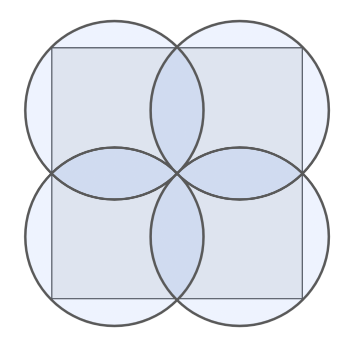
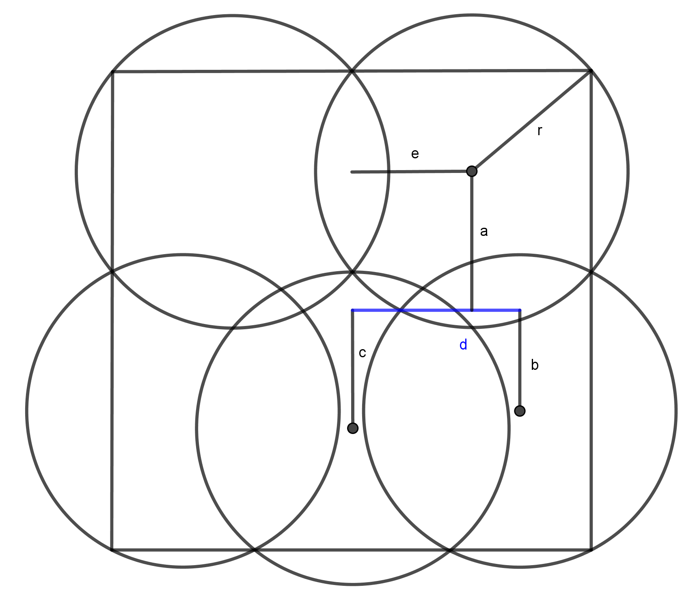
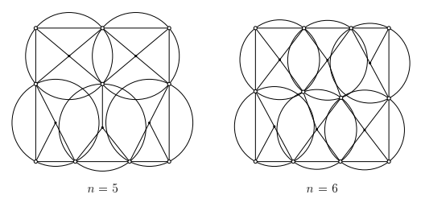

Suppose you have a unit square (i.e., with side length 1). If you also have four identical circles that can overlap, they would need to have a radius of \(\sqrt{2}/4\) to completely cover the square, as shown below:

A square that is completely covered by four overlapping circles of the same size. The four circles are centered over the four respective quadrants of the square, and all overlap in the squares center.
Now suppose that, instead of four identical circles, you have five identical circles that can overlap. What is the minimum radius they would need to completely cover a unit square?
Extra credit: Suppose you have six identical circles that can overlap. What is the minimum radius they would need to completely cover a unit square?
The Solution
Interestingly this problem appears to have been previously solved (more on that in a minute). But first, my solution: ### My solution I guessed that the best solution would have a bit of reflectional symmetry. With the help of some amazing geometric drawing software (Geogebra), I was able to come up with a solution with \(r\approx 0.326\) with the diagram below:

A Geogebra drawing of 5 disks of minimal radius covering the unit square.
Note that \(0.326<.3535 \approx\frac{1}{2\sqrt{2}}\) so this solution is definitely an improvement over simply covering the square with 4 squares.
I wanted to come up with a more exact value. By expressing the coordinates of the centres of the five circles in this geometric picture as
and doing a little bit of work, we can set up a system of equations that the values \(a\), \(b\), \(c\), \(d\), and \(r\) must satisfy (where \(e=\frac{1}{4}\)):
With the help of Mathematica, I was able to determine that the only solution to this (with \(a\), \(b\), \(c\), \(d\), and \(r\) all positive) is given by
[Edit (18-09-2022): Note that a previous version of the post had an incorrect solution here.]
Previous work
After a bit of Googling, I was able to stumble upon a few papers that had investigated this and similar problems. By far the best one was Covering a square with up to 30 equal circles. by Nurmela and Östergård (2000). In that work, the authors developed a clever optimization algorithm to determine the smallest radius of circle such that \(n\) circles of that size can be used to cover the unit square for \(n\) up to 30. Here are the figures for \(n=5\) and \(n=6\).

Minimal radius coverings with 5 and 6 disks.
The authors determined the optimal radii for \(5\) and \(6\) circles to be \(r_5=0.32616058400398728086\) and \(r_6=0.29872706223691915876\) respectively.